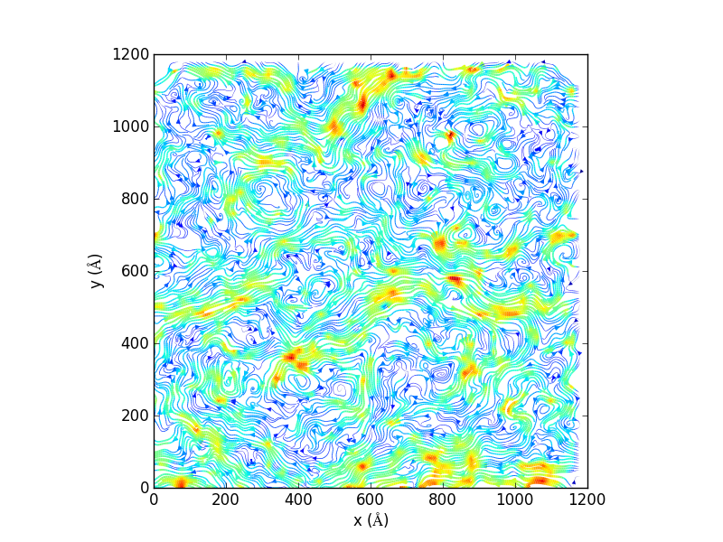

12.1.1. Streamplots (2D) — MDAnalysis.visualization.streamlines
- Authors:
Tyler Reddy and Matthieu Chavent
- Year:
2014
- Copyright:
GNU Public License v3
The generate_streamlines() function can generate a 2D flow field from a
MD trajectory, for instance, lipid molecules in a flat membrane. It can make
use of multiple cores to perform the analyis in parallel (using
multiprocessing).
See also
MDAnalysis.visualization.streamlines_3Dstreamplots in 3D
- MDAnalysis.visualization.streamlines.generate_streamlines(topology_file_path, trajectory_file_path, grid_spacing, MDA_selection, start_frame, end_frame, xmin, xmax, ymin, ymax, maximum_delta_magnitude, num_cores='maximum')[source]
Produce the x and y components of a 2D streamplot data set.
- Parameters:
topology_file_path (str) – Absolute path to the topology file
trajectory_file_path (str) – Absolute path to the trajectory file. It will normally be desirable to filter the trajectory with a tool such as GROMACS g_filter (see [1])
grid_spacing (float) – The spacing between grid lines (angstroms)
MDA_selection (str) – MDAnalysis selection string
start_frame (int) – First frame number to parse
end_frame (int) – Last frame number to parse
xmin (float) – Minimum coordinate boundary for x-axis (angstroms)
xmax (float) – Maximum coordinate boundary for x-axis (angstroms)
ymin (float) – Minimum coordinate boundary for y-axis (angstroms)
ymax (float) – Maximum coordinate boundary for y-axis (angstroms)
maximum_delta_magnitude (float) – Absolute value of the largest displacement tolerated for the centroid of a group of particles ( angstroms). Values above this displacement will not count in the streamplot (treated as excessively large displacements crossing the periodic boundary)
num_cores (int or 'maximum' (optional)) – The number of cores to use. (Default ‘maximum’ uses all available cores)
- Returns:
dx_array (array of floats) – An array object containing the displacements in the x direction
dy_array (array of floats) – An array object containing the displacements in the y direction
average_displacement (float) – \(\frac{\sum\sqrt[]{dx^2 + dy^2}}{N}\)
standard_deviation_of_displacement (float) – standard deviation of \(\sqrt[]{dx^2 + dy^2}\)
Examples
Generate 2D streamlines and plot:
import matplotlib, matplotlib.pyplot, np import MDAnalysis, MDAnalysis.visualization.streamlines u1, v1, average_displacement, standard_deviation_of_displacement = MDAnalysis.visualization.streamlines.generate_streamlines('testing.gro', 'testing_filtered.xtc', grid_spacing=20, MDA_selection='name PO4', start_frame=2, end_frame=3, xmin=-8.73000049591, xmax= 1225.96008301, ymin= -12.5799999237, ymax=1224.34008789, maximum_delta_magnitude=1.0, num_cores=16) x = np.linspace(0, 1200, 61) y = np.linspace(0, 1200, 61) speed = np.sqrt(u1*u1 + v1*v1) fig = matplotlib.pyplot.figure() ax = fig.add_subplot(111, aspect='equal') ax.set_xlabel('x ($\AA$)') ax.set_ylabel('y ($\AA$)') ax.streamplot(x, y, u1, v1, density=(10,10), color=speed, linewidth=3*speed/speed.max()) fig.savefig('testing_streamline.png',dpi=300)
References